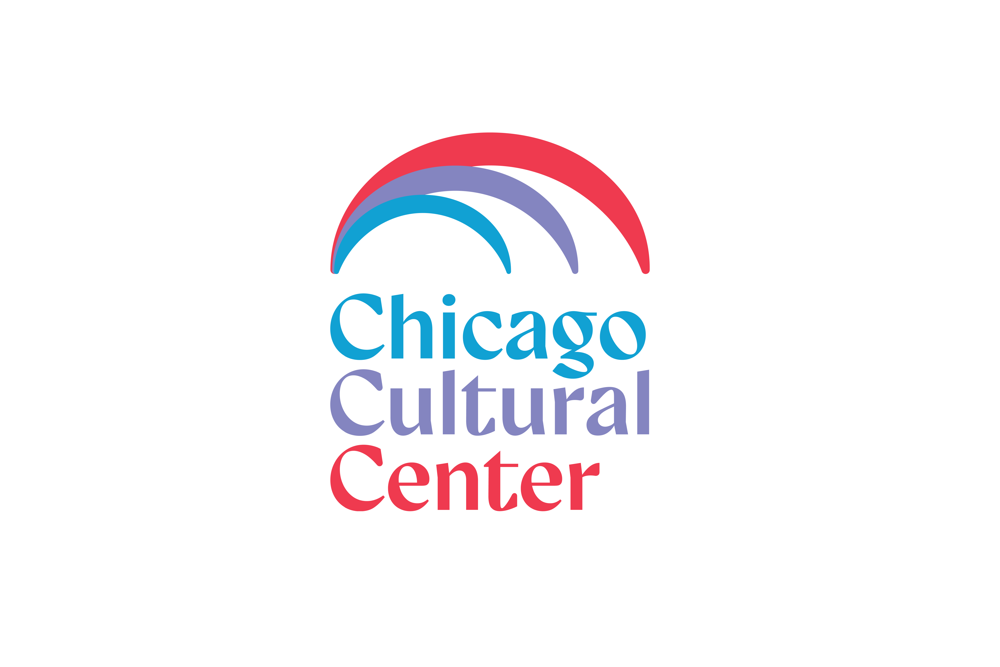
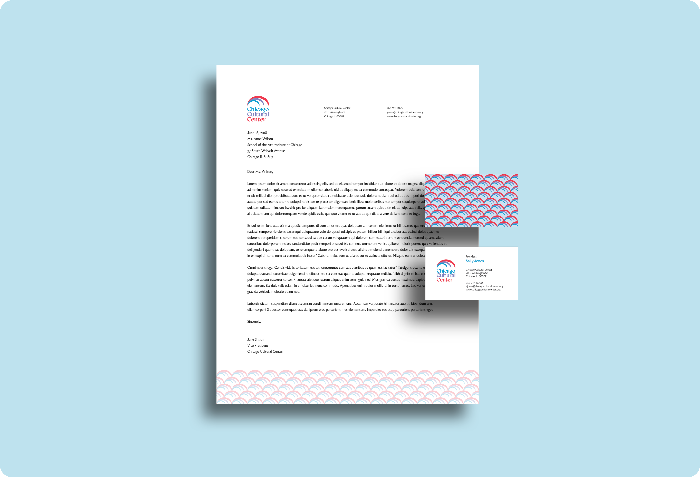
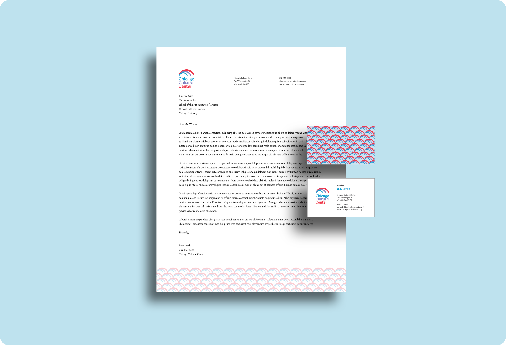
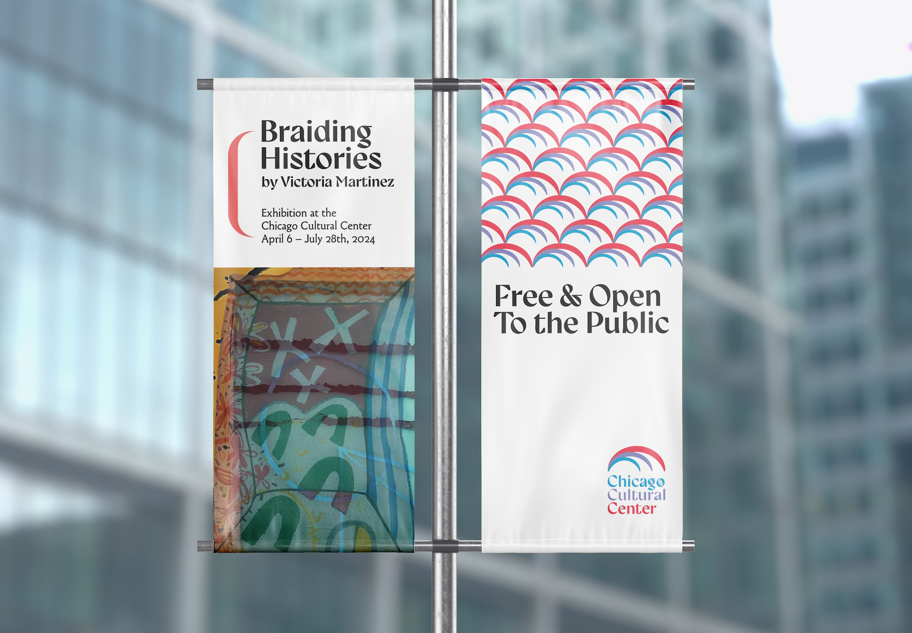
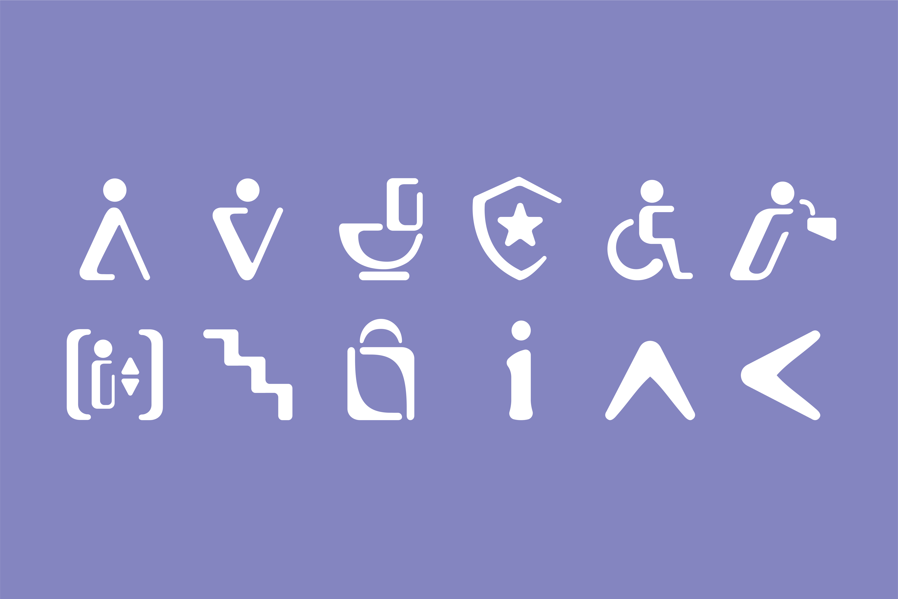
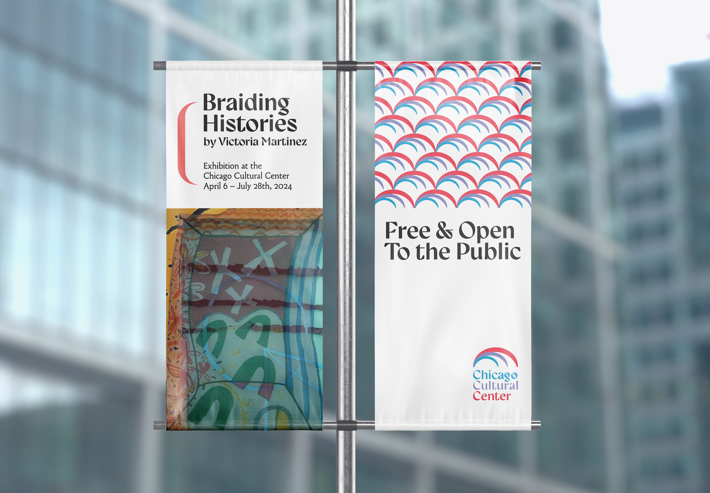
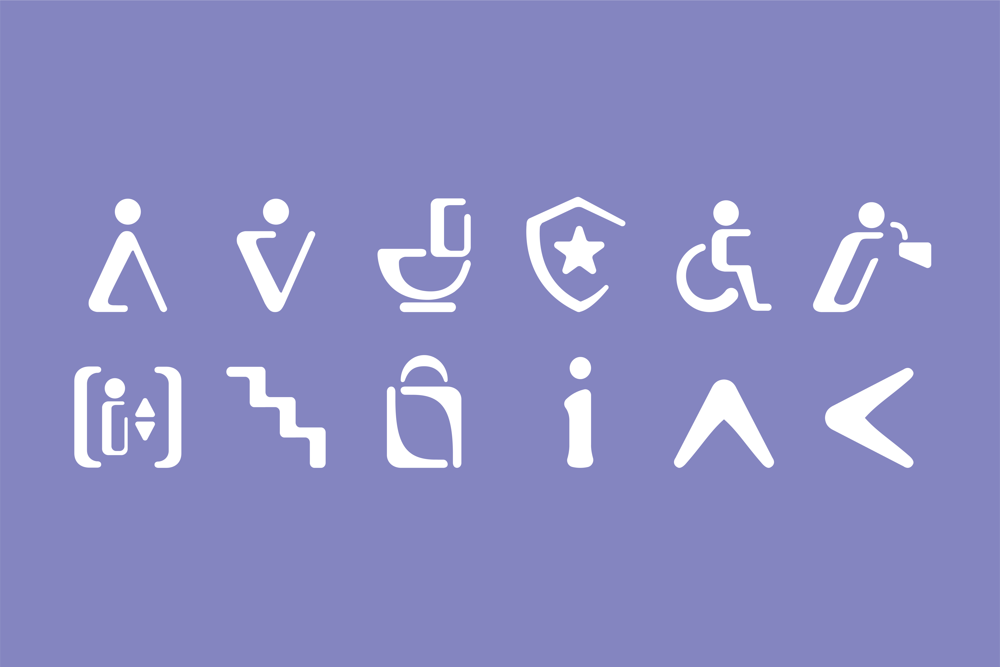

A rebranding project for the Chicago Cultural Center. Mockups of 6 deliverable were created: a stationery set (business card, letterhead, envelope), a brochure, posters, street banners, wayfinding icons and a website.
Context
The Chicago Cultural Center, opened in 1897 as the city's first public library, is now America’s first free municipal cultural venue. Renowned for its grand architecture, it features rare marbles, mosaics, and two iconic domes: the world’s largest Tiffany dome and a Renaissance-style dome by Healy & Millet. The center hosts concerts, art exhibits, and programs, alongside an interactive Learning Lab, the Buddy artisan store, the Claudia Cassidy Theater, and a rental program for free public events by local artists and organizations.
The Chicago Cultural Center does not have an official mission. However, the City of Chicago Department of Cultural Affairs and Special Events (DCASE) is responsible for the Chicago Cultural Center. Their mission is to:
Design Approach
Through the mark, I aimed to represent the domes through a series of arcs enclosing each other. The arcs are red, purple, and blue, and intersect at the far left end of the mark. As the chicago flag colours are red and blue, this image represents Chicagoans of all backgrounds coming together to celebrate arts and culture. The arcs intersecting also creates a wave-like shape, representing the center's influence and the bodies of water in Chicago (Lake Michigan, Chicago River). Throughout the identity, I created a pattern using the arcs, as well as used the shapes of the to crop images- images within images similarly representing inclusivity and unity.

 



 


